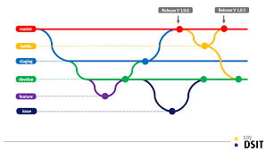

Las ramas en Git son una característica fundamental que permite trabajar en diferentes versiones de un proyecto simultáneamente. Aquí tienes algunos conceptos clave:
git branch nombre_rama.git checkout nombre_rama.git merge nombre_rama.Las ramas son útiles para desarrollar nuevas características, corregir errores o experimentar sin afectar la rama principal.
⬅️ Volver al inicio Siguiente ➡️